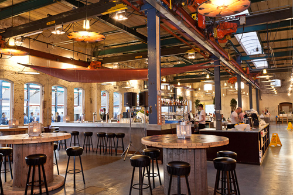

Stork
Amsterdam North is known for it's industrial buildings. From former garages to Shell and Stork buildings. Most of the barracks are renovated and turned into some of Amsterdam it’s most trendy restaurants, like Restaurant Stork Amsterdam. Most of the industrial elements of this huge building are still there. Restaurant Stork Amsterdam has a very good seafood menu, with lots of oysters and shellfish. And as most of you know… I love shellfish! I can highly recommend ordering the Fruits de Mer at Restaurant Stork Amsterdam. A huge plate with lots cockles, vongole, gamba, crab and coquille. Splurge yourself by ordering a lobster to compliment the Fruits de Mer :-). If you're not really into seafood, don't worry there are some delicious options for you on the menu as well. At Restaurant Stork Amsterdam they serve the a selection of cheese as a dessert from my favourite cheese shop Kef. Yummy! Try the goat cheese crème brûlé if you have the chance and order a MR dessert wine to go with your cheese plate. In the spring and summer Restaurant Stork Amsterdam has a huge outdoor terrace at the waterfront. Did you know you can take your boat there too? The view from this restaurant in Amsterdam North at the skyline of Amsterdam is stunning. Especially at night it's magical with all the lights!
| MENU | |
Starters
|
Deserts
|
Beef
|
Chicken
|
Drinks
|
Wines
|